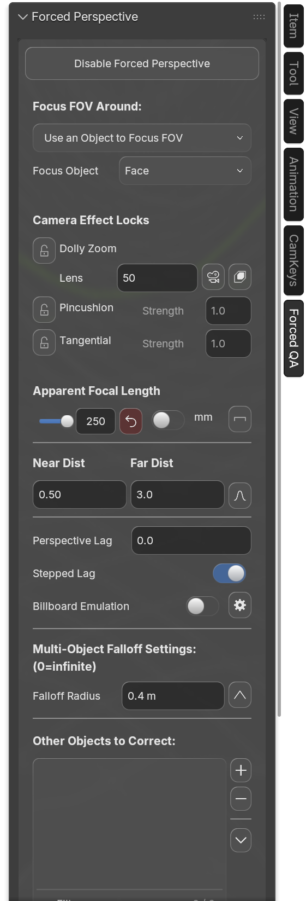
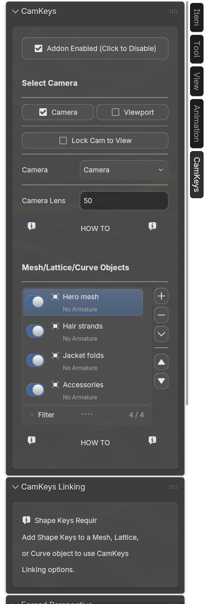
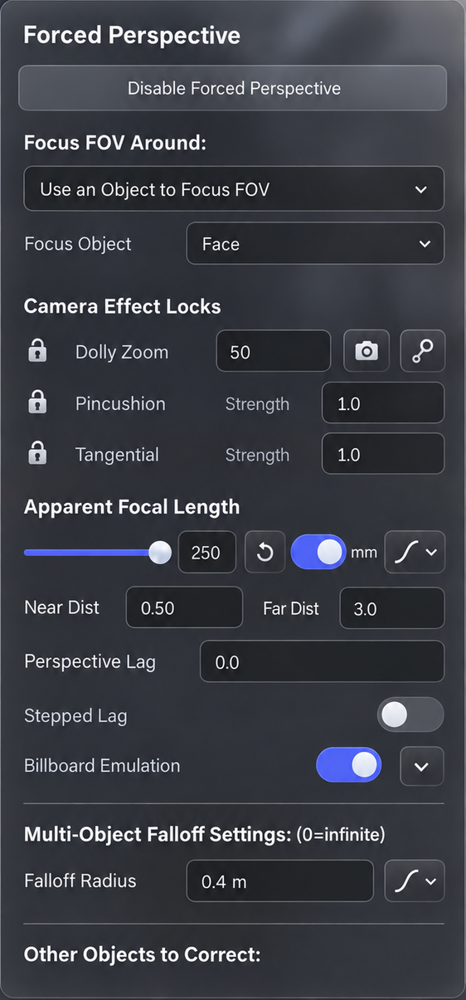
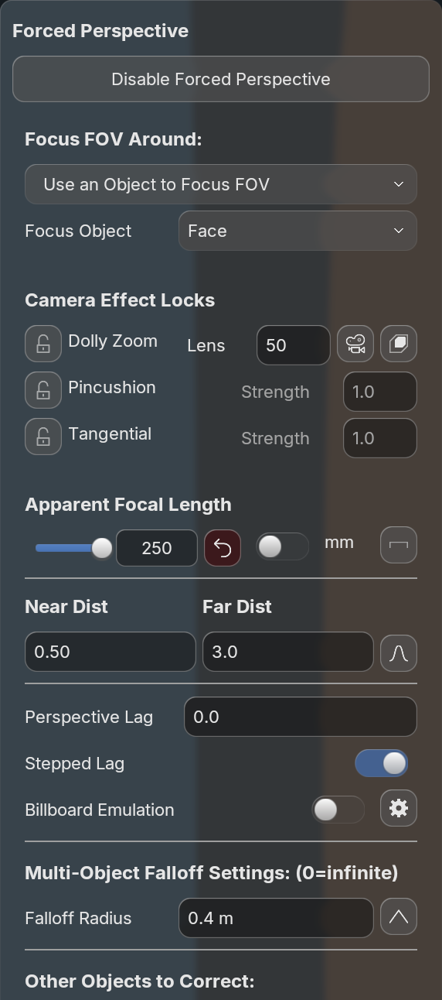
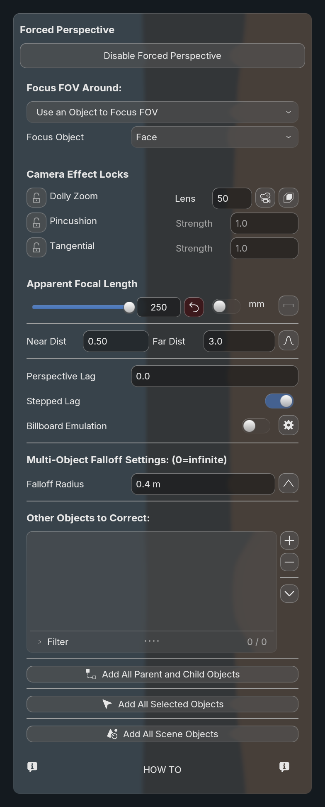
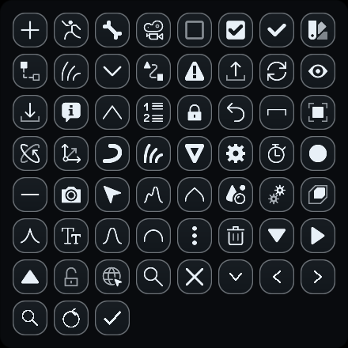

Forced Perspective · narrow host

Smaller buttons and list tools; bold aligned captions; bounded numeric sliders; matching external-label edges; coordinated narrow layouts; visible artwork centered in every icon button. Implemented in Beyond UI, with no CamKeys UI source edits.
Overview and updated estimate · Reusable layout rules · Runtime evidence and limits


The comparison normalizes the concept's approximate 26 px body font to the implementation's 22 px body font. Panel width is not stretched to conceal layout differences. Reference v2 adds the requested slider and removes invented numeric arrows.


Reference opacity
Exact reference fidelity is still an open acceptance gate. Original Blender icon artwork, the active theme/backdrop, and author-supplied Lens/curve actions and separators differ from the concept. Those differences are visible here; the source controls and their owners are preserved.
| Control | Before | Now, logical units |
|---|---|---|
| Field | 32 | 26 |
| Primary action, 1.5× authored scale | 48 | 30 |
| Icon-only action | 32 | 24 |
| List tool | 32, touching neighbors | 22, with 4-unit gaps |
| External label inset | Mixed 0 and 6 | 0 for fields, switches and colors |
Width


53 original source icons + 6 vector fallbacks, at 1×/1.5×/2×. All 177 button captures pass: maximum visible-bounds offset 0.5 framebuffer pixels. Source transparent padding is excluded; original shapes and proportions are retained. Below is the 2× sheet.

These GIFs are state slideshows, not animation timing demonstrations.


Scale
292 unit tests; Blender 5.1.2 and 5.2.2 consumer checks; twelve width/scale captures per version. Native N-panel owner-menu routing, list expansion and text retention checked. Test launch audits recorded no activation. Updated installed CamKeys vendor is ready on next launch; unrelated live scenes were not reloaded or saved.